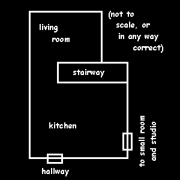

The
kitchen
is noteworthy in that it is a sensible kitchen, rather than four walls, a floor, and a ceiling for artwork.
The stairway up leads to the part of the studio that Chandra rents out.
The
living room
has more art than I have pictures... we ran out of film in the other rooms. I love the floor!
about the site
events